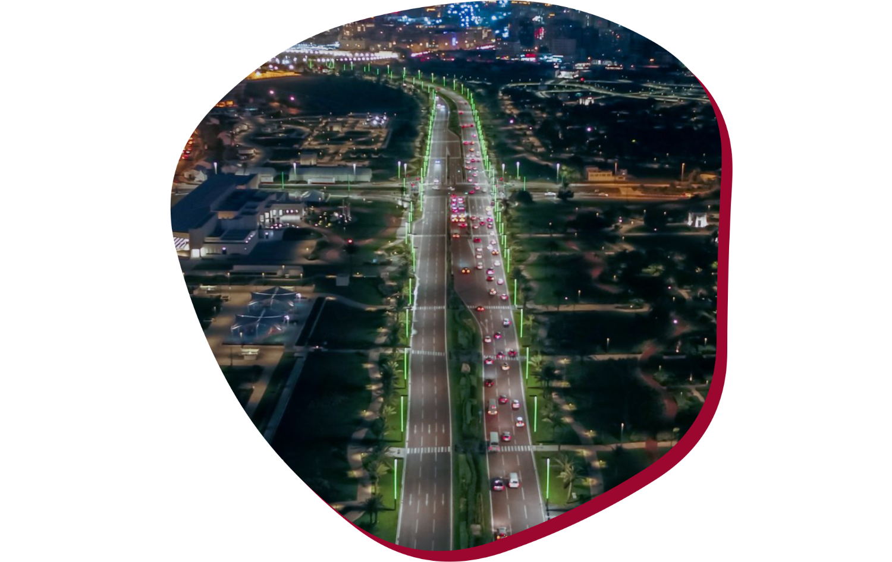
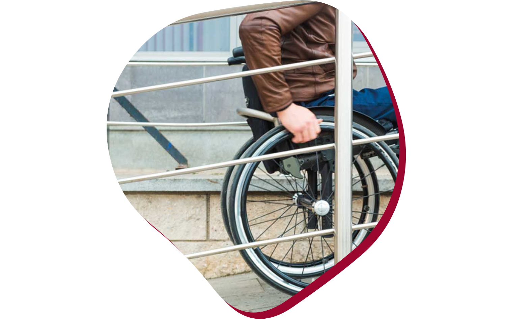

Estacionamentos
Cada estádio conta com um número de vagas reservados a pessoas com deficiência, elas estão localizadas em lugares que facilitam a locomoção até a entrada do evento.

Pontos de assistência de mobilidade
Os pontos de assistência contam com voluntários disponíveis para auxiliar espectadores com deficiência e espectadores com mobilidade limitada.

Faixas de segurança acessíveis
Próximos às áreas de estacionamento e pontos de transporte público, os espectadores encontram as faixas de segurança acessíveis, que proporcionam maior conforto na locomoção de espectadores com deficiência e espectadores com mobilidade limitada.